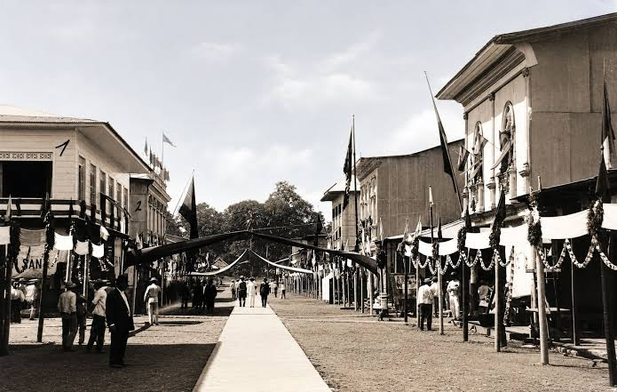
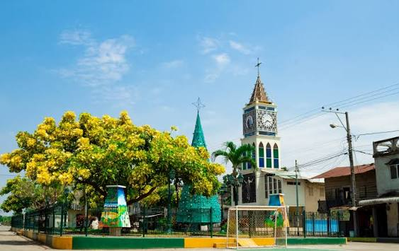
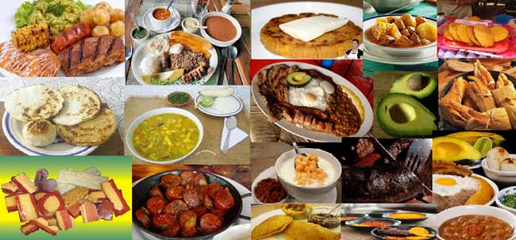
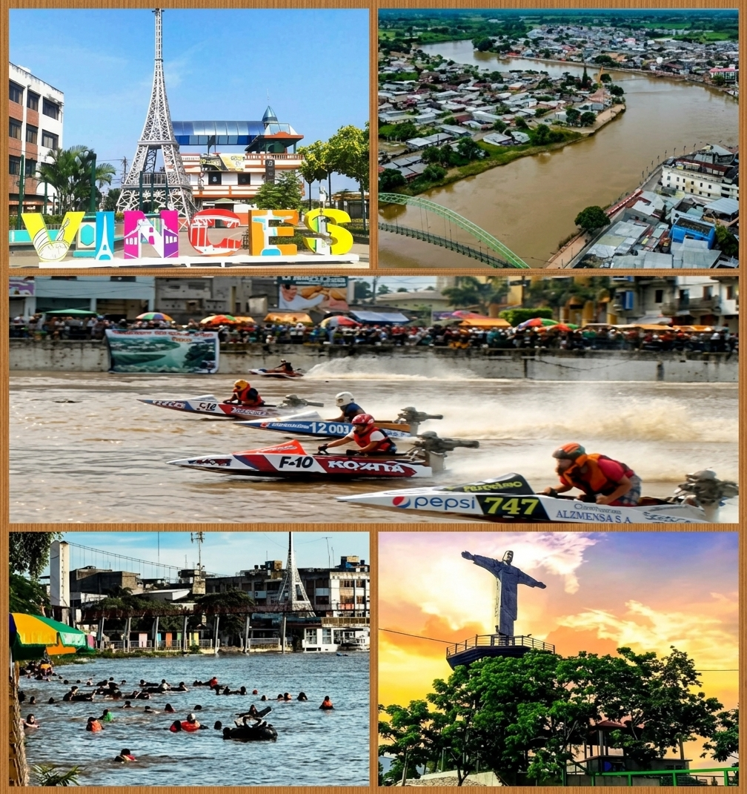
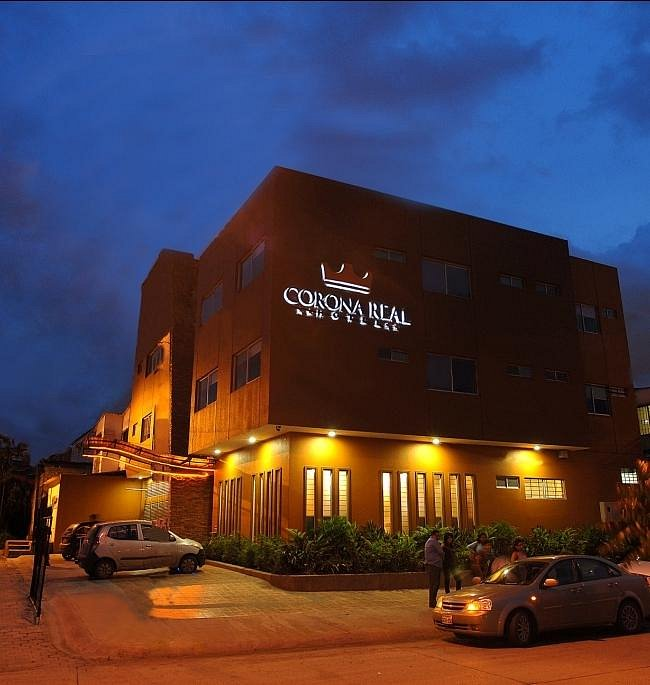
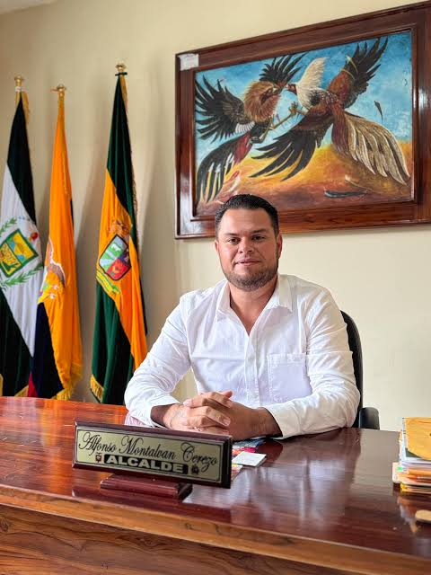

Bienvenido a la página oficial del cantón Vinces. Célebre en todo el país por su historia ligada a la pepa de oro (cacao), su arquitectura tradicional de balcones coloniales y las emocionantes competencias náuticas de velocidad en su río.

Vinces experimentó un esplendor económico extraordinario a finales del siglo XIX y principios del XX gracias a la exportación mundial de cacao fino de aroma. Fue cantonizado oficialmente el 14 de junio de 1845.

El cantón se divide administrativamente en zonas urbanas y rurales:

La culinaria vinceña destaca por los sabores tradicionales de la cuenca del río:

Sobresalen el río Vinces (escenario de la famosa Regata Guayaquil-Vinces), las casonas antiguas de madera de estilo francés, y los balnearios de agua dulce en temporada playera.

Cuenta con hostales, hoteles acogedores y quintas vacacionales ideales para recibir a los turistas, especialmente durante las festividades de la regata.

Alcalde: Alfonso Montalván Cerezo
Alberga a más de 80.000 habitantes, caracterizándose por su profunda tradición montubia, hospitalidad y actividad agrícola.
Se encuentra ubicado en la zona sur-oeste de la provincia de Los Ríos, bordeado por el caudaloso río Vinces y limitando con cantones como Baba, Puebloviejo y la provincia del Guayas.